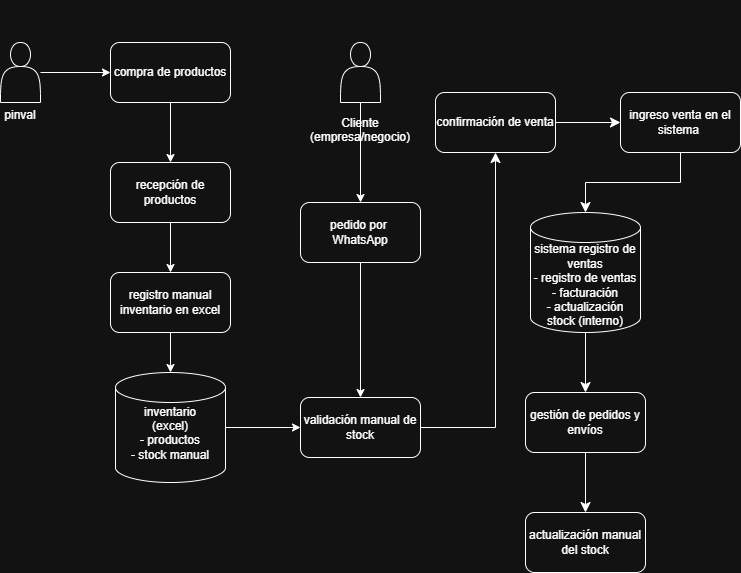

SICD
Modernización del Sistema de Inventario
Distribuidora de Artículos de Aseo B2B
Propuesta de Proyecto de Título
1. Contexto Actual de la Empresa Pinval
- Empresa dedicada a la venta de artículos de aseo.
- Funciona como intermediario entre proveedores y negocios.
- Cuenta con sistema de ventas (POS) para facturación.
- Gestión de inventario realizada mediante planillas Excel.
1.1. Problemática Principal
- Dependencia manual: Uso exclusivo de Excel para controlar ingresos, salidas y stock del inventario.
- Desfase de información: Inconsistencia y retraso entre las ventas del sistema POS y el stock real en bodega.
- Riesgo de errores: Alta probabilidad de errores humanos al registrar productos.
- Impacto: Pérdida de eficiencia operativa en la toma de decisiones por falta de datos en tiempo real.
1.2. Nuestro Perfil: ¿Por qué fuimos contratados?
- Modernización: Reemplazar el uso de planillas estáticas por un sistema web centralizado y seguro.
- Desarrollo a Medida: Proveer una herramienta diseñada específicamente para las reglas operativas (B2B) de Pinval.
- Gobernanza y Calidad: Garantizar que cada entrada, salida y ajuste de stock cuente con respaldo en tiempo real.
2. Capa de Negocio
¿Por qué este proyecto es vital para la empresa hoy?
2.1. Modelo de Negocio
- Venta de productos de aseo.
- Relación con proveedores (compra de productos).
- Distribución a clientes finales y empresas.
- Principal fuente de ingresos: ventas B2B.
- Canales de venta: Whatsapp.
2.2. Proceso de Negocio (AS-IS)
- Compra de productos a proveedores.
- Almacenamiento de productos.
- Registro de ventas en sistema POS.
- Actualización de inventario en Excel.
- Entrega de productos a clientes.

2.3. Necesidades
- Mejor control del inventario.
- Información centralizada y actualizada.
- Reducción de errores en el manejo de datos.
- Mayor eficiencia en los procesos.
2.4. Riesgos
- Errores en el control de stock.
- Información desactualizada.
- Dependencia de procesos manuales.
- Pérdida o inconsistencia de datos.
2.5. Oportunidad de Mejora
- Implementación de un sistema de inventario.
- Integración de datos de ventas e inventario.
- Automatización de procesos.
- Mejora en la gestión y control de la información
3. Propuesta
- Implementación de un sistema de inventario centralizado (cloud) orientando al control de productos, ventas y stock en tiempo real.
- Desarrollo de una interfaz web (Dashboard) para la consulta y gestión eficiente por parte del equipo de PINVAL.
- Automatización en la recepción de pedidos vía WhatsApp, incluyendo validación automática de stock y confirmación.
- Trazabilidad completa: desde el registro de ventas hasta la actualización de stock, preparación del pedido y entrega final.
- Uso de tecnologías modernas (React, Node.js, PostgreSQL)
- Reemplazo definitivo del uso de planillas Excel para eliminar el desfase de información y los errores humanos.
Flujo TO-BE (Proceso Propuesto)
Integración y Automatización del Inventario

3.1. Impacto en Productividad
- Ahorro de Tiempo: Eliminación de la digitación manual y del doble trabajo (o retrabajo) en planillas Excel.
- Decisiones Ágiles: Información de stock consolidada y accesible en tiempo real para la gerencia.
- Reducción de Pérdidas: Trazabilidad estricta que evita el extravío o falta de cuadratura del inventario.
- Enfoque en el Core (Ventas): El equipo invierte menos horas cuadrando números y dedica más tiempo a gestionar clientes B2B.
3.2. Propuesta de Roles
- Product Owner: Jorge Manriquez .
- Analista de Base de Datos: Santiago Mora
- Ingeniero Gobernanza de Datos: Constanza Arce
- Ingeniero QA: Josue Campusano
4. Marco Legal (Compliance Chile)
- Cumplimiento de normativas sobre protección de datos. Consideración de leyes chilenas:
- Ley 21.719: Regula la protección de los datos personales, estableciendo cómo deben ser recolectados, almacenados y utilizados, asegurando la privacidad de las personas.
- Ley 21.663: Establece obligaciones relacionadas con la seguridad de la información y la responsabilidad en el uso de datos, promoviendo buenas prácticas en su manejo.
4.1. Políticas de Datos
- Definición de reglas para el uso de la información.
- Control de acceso a los datos.
- Registro y actualización correcta de la información.
- Uso adecuado de los datos dentro del sistema.
- El sistema será la fuente principal de inventario.
- El uso de excel pasa a ser herramienta secundaria.
- Toda modificación debe registrarse.
- Acceso restringido por roles. (Admin, Usuario)
4.2. Calidad de Datos
- Datos completos y actualizados.
- Reducción de errores en el registro.
- Consistencia en la información.
- Validación de datos ingresados al sistema.
4.3. Seguridad de la Información
- Protección de datos del sistema.
- Control de acceso a la información.
- Respaldo de datos (backup).
- Prevención de pérdida o modificación indebida.
4.4. Consideraciones Éticas
- Transparencia: Los cálculos de stock y reportes financieros deben reflejar 100% la realidad del negocio.
- Confidencialidad: Compromiso absoluto de proteger la estrategia de precios y la base de datos de los clientes (B2B).
- Inclusión Digital: Diseño de una interfaz intuitiva que asegure que ningún operario quede excluido por tener menor experiencia tecnológica.
- Uso Ético de la Información: Evitar el uso de métricas de rendimiento para generar presiones laborales desleales, enfocándose en la eficiencia operativa.
5. Propuesta de Herramientas (Backend y BD)
- ¿Por qué la elegimos?: Garantiza integridad transaccional (Cumplimiento ACID). Es fundamental para asegurar la consistencia del catálogo de productos y la precisión del stock en el modelo B2B.
- ¿Cómo la utilizaremos?: Almacenará e interrelacionará de manera estructurada los productos, usuarios, proveedores y movimientos de inventario.
- ¿Por qué la elegimos?: Su arquitectura asíncrona y orientada a eventos permite procesar múltiples solicitudes simultáneas de manera eficiente y escalable.
- ¿Cómo la utilizaremos?: Proveerá una API REST que centralizará la lógica de negocio, gestionando la comunicación entre la interfaz web y la base de datos.
6. Propuesta de Herramientas (Frontend y QA)
- ¿Por qué la elegimos?: React permite desarrollar interfaces dinámicas y modulares (SPA), mientras que TypeScript previene posibles fallos al incorporar tipado estricto en el desarrollo.
- ¿Cómo la utilizaremos?: Se implementará un panel de administración (Dashboard) interactivo y responsivo para gestionar el inventario y visualizar reportes.
- ¿Por qué la elegimos?: La validación manual continua de un sistema en producción es propensa a errores e ineficiente a nivel de costos y tiempo.
- ¿Cómo la utilizaremos?: Se desarrollarán scripts de pruebas automatizadas para validar los flujos críticos, como el alta de productos y la actualización correcta del stock.
Fin de la Propuesta
¿Consultas o Dudas?